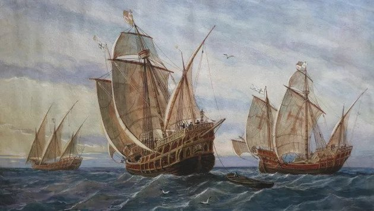

A nagy földrajzi felfedezések
Technikai feltételek
- ismét elterjedt az a nézet, hogy a Föld gömb alakú → ezt tükrözte Toscanelli térképe
- új hajótípus jelent meg: a karavella (jól kormányozható, magas oldalfalú, nagy vitorlafelületű)
- tájékozódást segítő eszközök is megjelentek pl. iránytű; fejlődtek a hajózási ismeretek
A portugál felfedezések
15. sz. közepétől indítottak felfedezőutakat a portugálok Afrika partjai mentén az arany és a fűszerek megszerzéséért.- Bartolomeu Diaz elérte a Jóreménység fokát, vagyis Afrika legdélebbi pontját (1487)
- Vasco da Gama megkerülte Afrikát és eljutott Indiába (1498)
- hatalmuk ezekre a telepekre, kikötővárosokra korlátozódott
→ nagyobb területek meghódítása az ázsiai kultúrák fejlettsége és nagy népességszáma miatt
nem volt lehetséges
- közvetlen kereskedelmi kapcsolat jött létre a Távol-Kelettel
→ a közvetítők feleslegessé válása miatt hanyatlik a levantei kereskedelem
→ a nemesfém azonban továbbra is kiáramlott Európából, mivel az európaiak továbbra is
csak nemesfémmel tudtak fizetni és nem csereáruval
- a portugálok így hatalmas jövedelemre tettek szert a fűszerkereskedelem révén
Spanyol felfedezők
- Kolumbusz Kristóf a spanyol királyi pár megbízásából indult el útjára. Toscanelli térképe alapján úgy gondolta, hogy nyugat felé hajózva majd eljut Indiába. 1492. október 12-én azonban nem Indiába jutott el, hanem elérte az amerikai kontinenst: a Bahama-szigeteken kötött ki három hajójával. Innen számítjuk a középkor végét és az újkor kezdetét. Még háromszor járt Amerikában, de ő mindvégig azt hitte, hogy Indiában járt.
- Amerigo Vespucci ismerte fel, hogy új földrészre találtak; róla kapta a kontinens a nevét.
- Magellán körbehajózta a földet 1519-22 között. Eredetileg a Fűszer-szigetek, vagyis a mai Indonézia felé keresett rövidebb utat. Magellánt a Fülöp-szigeteken 1521-ben megölték a bennszülöttek, de egyik hajója Afrika megkerülésével visszajutott Európába.
Forrás: Pásztorné Zámbori Ibolya Vázlata